Jelentkezés
Telefonon vagy az űrlapon. Az ügyfélszolgálat hétköznap 9 és 15 óra között visszahívja.
Amivel küzd
Szorongás, pánik Hangulat, depresszió Kiégés, stressz Gyász, veszteség Párkapcsolati válság Kamasz otthon Függőség Önismeret, életvezetésAmit kínálunk
Felnőtt egyéni terápia Pár- és családterápia Gyermek és serdülő Csoportterápiák Coaching Pszichiátriai szakrendelés Sportpszichológia Cégeknek
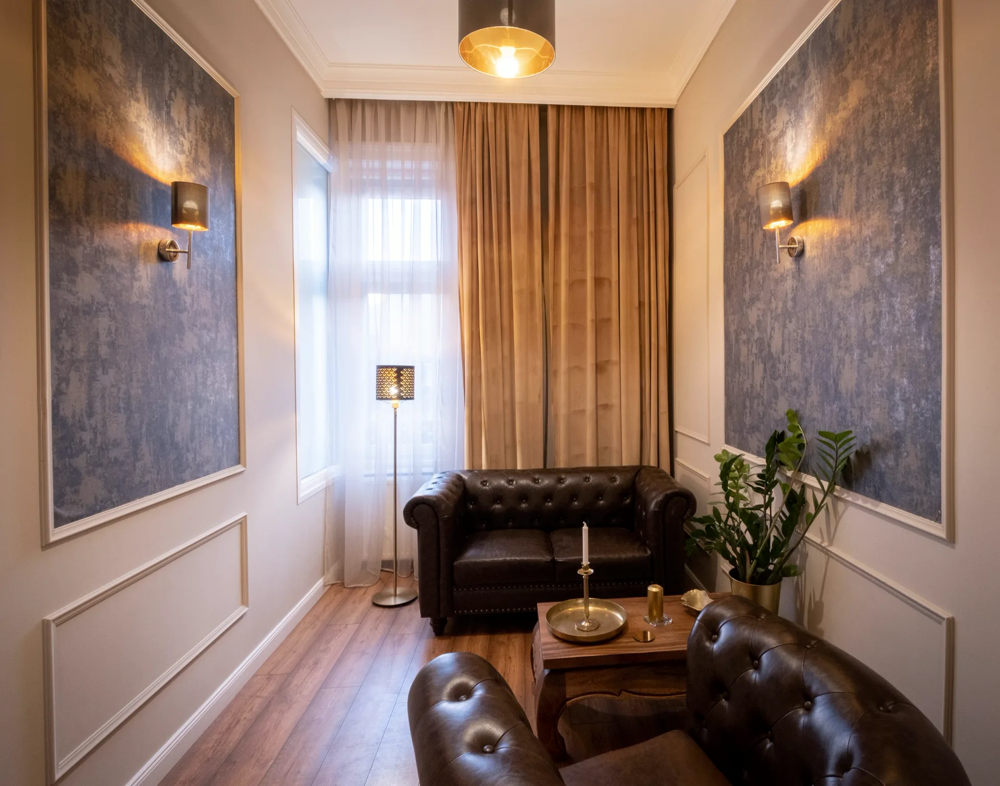
Negyvennégy szakember egy állami akkreditált szakképzőhelyen, egy budai polgári házban. Három kérdés után megmondjuk, ki való Önnek.
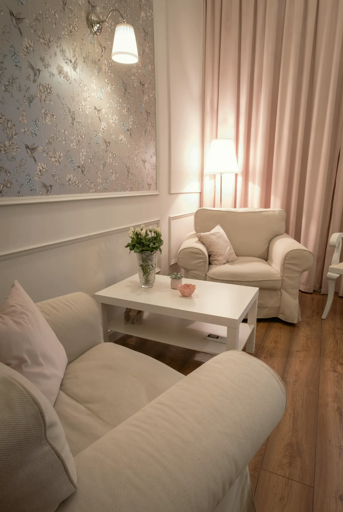
Miért más egy intézmény
A képzésben lévők szakmai vezető felügyelete alatt dolgoznak, a tapasztalt klinikusok rendszeres esetmegbeszélésre járnak, és a ház egyben az ELTE és a PTE gyakorlóhelye. Ez nem jelvény a falon, hanem a hétköznapi munka rendje: Ön egy intézmény szakmai hátterét kapja, nem egyetlen rendelő szavát.
Amivel hozzánk fordulnak
Sokan jönnek szorongással. Nem diagnózist kérünk, hanem azt, mi történik Önnel.
Az első beszélgetésen nem az a kérdés, mi a baj neve. Az a kérdés, mi változott, és mióta.
A szám azt mutatja, hány kollégánk foglalkozik az adott területtel. Kattintson, és a regiszter csak őket mutatja.
Sportolóknak külön oldal: sportpszichológia. Valakiért aggódik, nem magáért? Három út, ha hozzátartozó keres segítséget
A regiszterben minden kollégánk egy sorszámot kap: ez azonosító, nem rangsor. A hat itt látható név a szakmai vezetés választása.
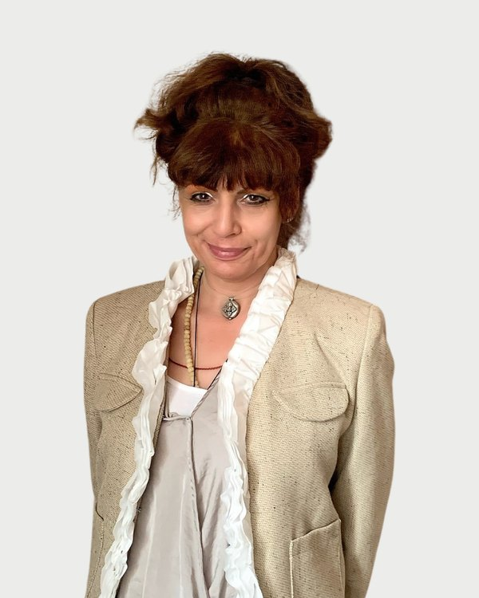
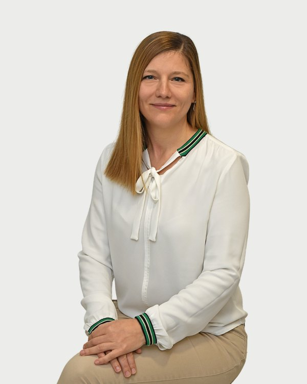
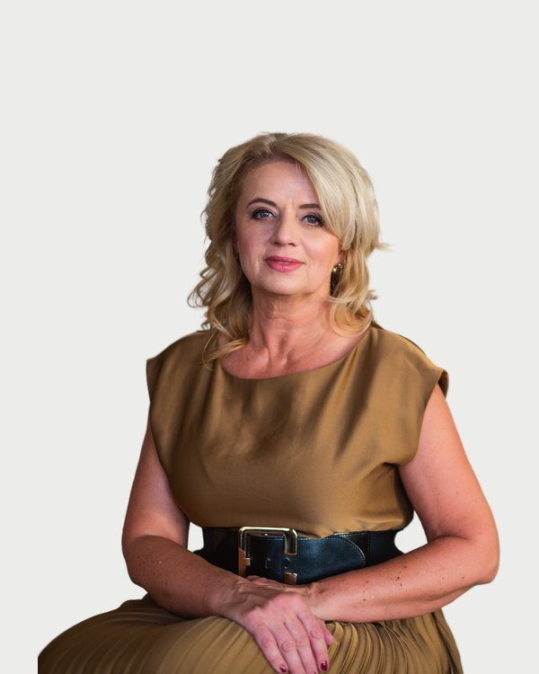
Négy lépés az első telefontól az első közös döntésig. Nem kell tudnia előre, mit mondjon.
Telefonon vagy az űrlapon. Az ügyfélszolgálat hétköznap 9 és 15 óra között visszahívja.
Három kérdés: mi történik, kinek keres, személyesen vagy online. Ebből javaslunk egy szakembert.
Ötven perc a Mészáros utcában vagy online. Megismerkedés, a keret és a cél tisztázása.
Az első alkalom végén együtt döntik el, folytatják-e, és milyen sűrűséggel.
Mészáros utca 18., első és második emelet. Nem rendelőintézet, nem irodaház: lakásokból lett rendelők, ahol az ajtók csukva vannak, és a folyosón nem hallani, mi történik odabent. A Központ
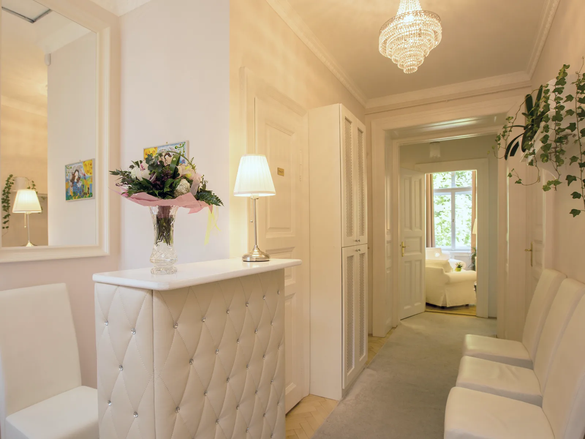
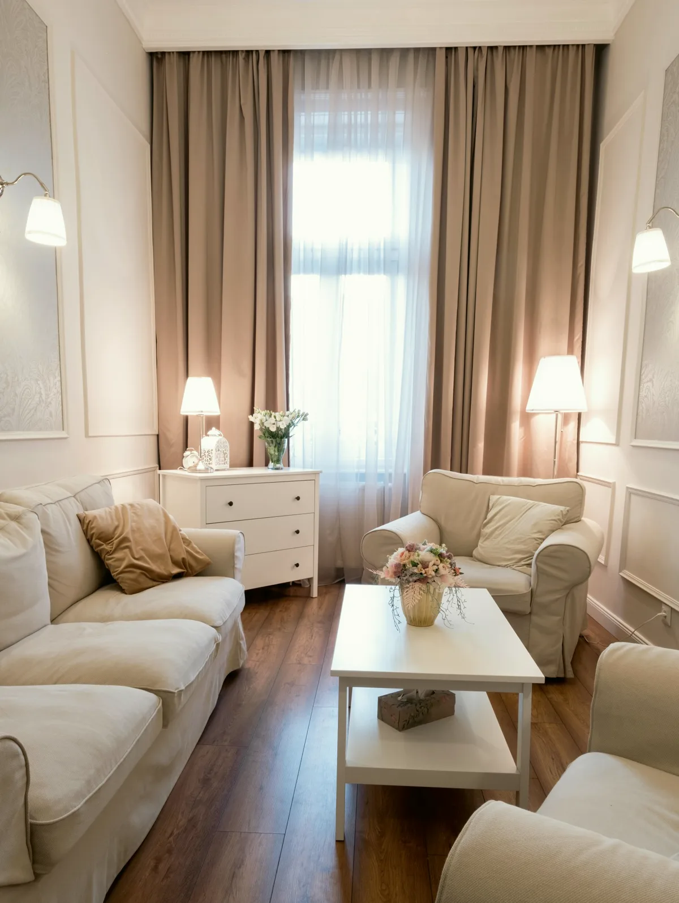
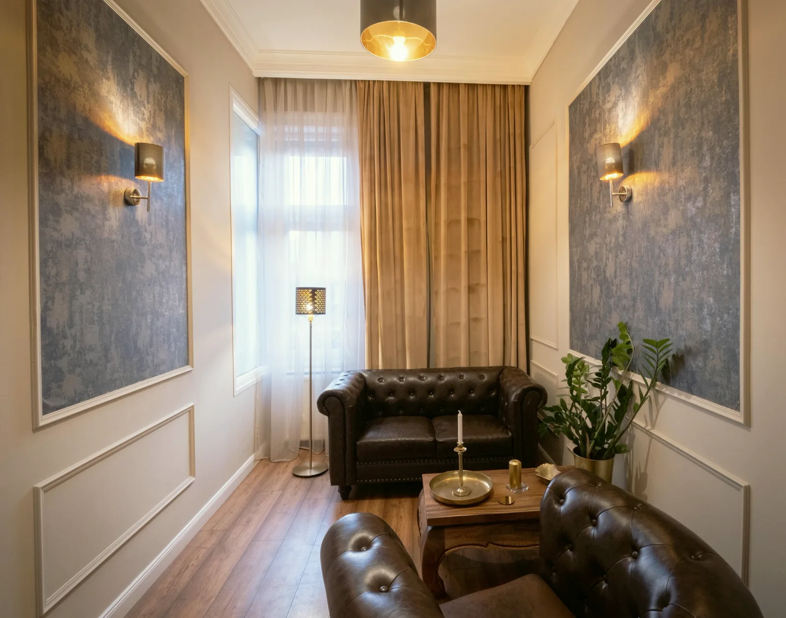
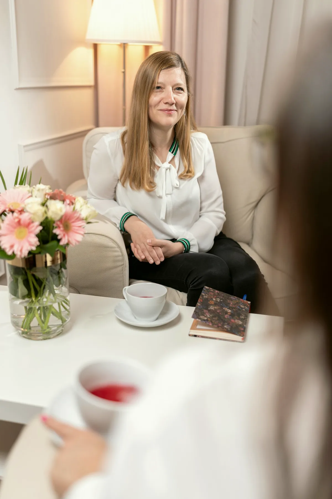
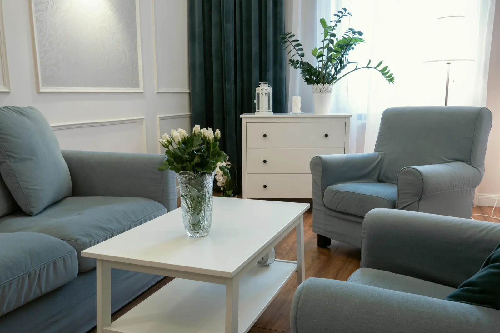
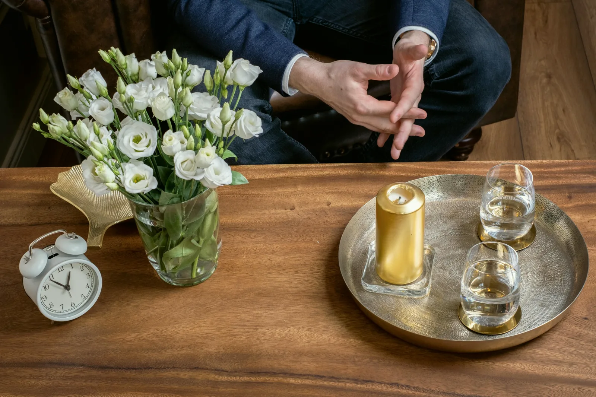
Rendelés hétköznap 8 és 20 óra között, személyesen a Mészáros utcában vagy online. Ha nem tudja, kihez, azt is megbeszéljük.